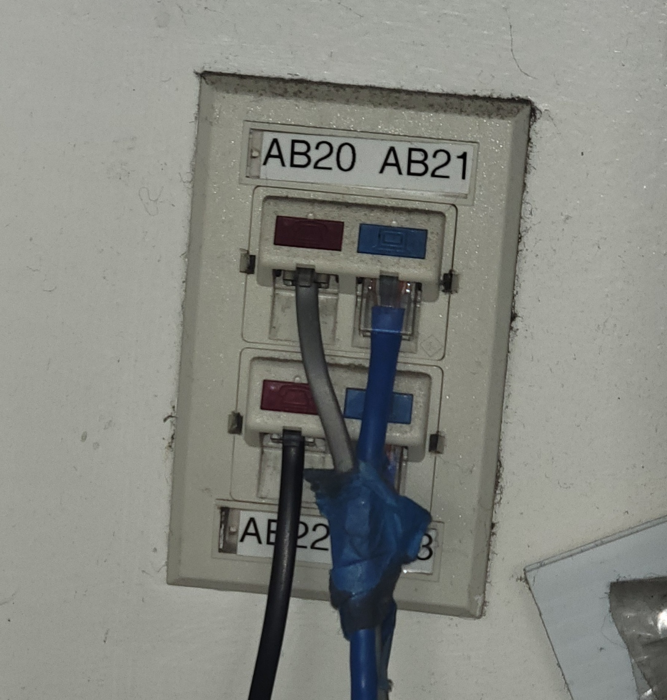

Physical cables, such as Ethernet cables, used to connect devices in a network for data transmission.
Network cables are essential components in wired networks, providing the physical medium for data transmission between devices. Common types include Ethernet cables (Cat5e, Cat6), fiber optic cables, and coaxial cables.
Ethernet cables are widely used in local area networks (LANs) to connect computers, routers, switches, and other network devices. They come in various categories, with higher categories supporting faster data transfer rates and improved performance.
In the image phone lines are also present!